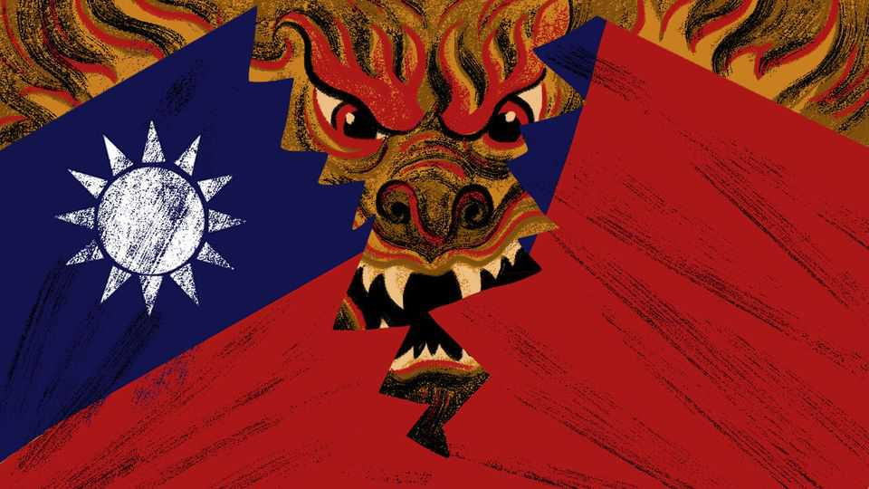

Taking Taiwan’s democracy hostage
Self-interested Taiwanese politicians are making the country increasingly ungovernable. China is the only winner

Aug 13th 2026
HOW MANY kids would Xi Jinping shoot to take Taiwan? The island’s youngsters have a record of staging mass protests when they feel betrayed by their rulers. Imagine a coercive Chinese takeover, brokered by pro-appeasement Taiwanese elites. Whose troops would clear the streets, and with what lethal force?
Would Chinese conquerors use show trials to teach the Taiwanese public that self-rule has ended, and with it, their 30-year experiment with multiparty democracy? China has a legal instrument prepared: an anti-secession law passed in 2005, ready to use against “diehard Taiwan independence elements”. That is chilling talk for Taiwan’s Democratic Progressive Party (DPP), which has won the past three presidential elections. The DPP emphasises Taiwan’s separate identity and opposes China’s claims to the island. Chinese officials have called Taiwan’s president, Lai Ching-te, a traitorous rat. The gravest charges in the anti-secession law, such as “splitting the state”, are punishable by death.
What of Taiwan’s public servants? How many would be jailed or sacked, to ensure that, in line with China’s stated goals, only those who “support the reunification of the country” hold office after Taiwan becomes a region of the People’s Republic of China? The precedent exists. After anti-government protests swept Hong Kong in 2019, that territory’s Chinese overlords demanded that local officials and politicians take loyalty oaths or be purged.
Chinese officials have talked of the need for re-education campaigns in post-conquest Taiwan. On an island of 23m people, where surveys consistently show that a large majority of the public favour some form of self-rule, millions might have to enroll. Then there is Taiwan’s world-leading semiconductor industry, which churns out more than 90% of the most advanced chips used around the globe. Skilled engineers make that high-tech wizardry happen. If they try to flee, would China lock them in their fabs?
When outsiders study possible Taiwan crises they typically weigh the risks of a Chinese invasion or blockade. That is natural. If America were to intervene to defend the island, two nuclear-armed superpowers would be at war. But another scenario merits study, too. If Taiwan is ever induced to surrender without a fight—China’s clear preference—Mr Xi and his underlings would face a series of horrible choices. Brutal repression might be needed to crush Taiwan’s freedoms, and would be seen around the world. The conclusion should be obvious to politicians in Taiwan. Their democracy is not just an improvement on the dictatorship that ruled the island after Chiang Kai-shek, the loser of China’s civil war, fled to exile there in 1949. Their political system is a deterrent.
Taiwan is sorely in need of more things that would make Mr Xi pause. China has no fear of Taiwan’s armed forces, though the DPP is trying to push through their long-overdue modernisation. Taiwan’s traditional protector, America, is an unreliable friend. President Donald Trump has agreed record-breaking arms sales to Taiwan, yet he also mocks it as outgunned by mighty China. After talks with Mr Xi in Beijing in May, Mr Trump echoed Chinese talking-points that call President Lai a hothead who may start a war.
Alas, far from prizing Taiwan’s democracy, self-interested politicians are breaking it. Partisan feuding has hobbled the work of government since a close election in 2024 left the DPP in control of the presidency and the executive branch, but the opposition, led by the KMT (Chiang Kai-shek’s heirs), controlling the parliament.
Lots of countries have toxic politicians. Taiwan’s stand out for their irresponsibility. The blame is not evenly distributed. President Lai is stubborn and does not consult KMT moderates as his predecessor, Tsai Ing-wen, did. But the opposition has triggered a rolling constitutional crisis. KMT legislators and their allies held up government budgets for months, including funds for American arms. They have blocked judicial appointments to the constitutional court, leaving it so shrunken that its remaining judges cannot agree if they are quorate to tackle gridlock in government.
In a dramatic act of self-harm, the opposition has held up plans to kick-start a domestic drone industry with orders for 210,000 air and sea drones. Taiwan needs drones, is good at electronics and could also export to Western countries desperate for non-Chinese kit. Yet KMT-led budget squabbles are blocking new drone orders until next year, at the earliest. Visiting Taiwan, your columnist invited KMT high-ups to explain. Oh, we support dronemaking, they said, this is political. Let me be blunt, confided a bigwig: KMT legislators fear the government will channel drone funds to firms that donate to DPP coffers. Asked whether KMT-friendly firms could make drones, then, the bigwig sighed. Pro-KMT firms often have investments in China so would not dare, the insider explained: the party prefers not to face up to this dilemma.
DPP politicians condemn the KMT’s chairwoman, Cheng Li-wun, for declaring that Taiwan cannot rely on America and so needs to strengthen ties with China. They were angry when she held friendly meetings with Mr Xi in Beijing in April. Ms Cheng insists that her goal is to avoid a war, not to sell Taiwan out. DPP insiders allege that some in her party, in effect, act as “surrogates” for China. There is no doubt that Taiwan is the target of Chinese influence operations. It is unclear whether these work. That said, the youngest Taiwanese are growing disillusioned with politics and less willing to vote. The same group is bombarded with mainland-backed social media mocking Taiwan’s democracy as chaotic.
Dysfunction is hurting Taiwan. Its journey from dictatorship to open society has transformed its global standing. But outsiders cannot love its democracy more than its own politicians do. Taiwan’s freedoms should be a strength, raising the costs to China of a takeover. Shamefully, they are being betrayed from within. ■